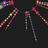
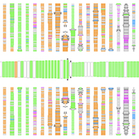

2013-2014
Plexlines
John Lee & Sanny Lin
Plexlines are graphical timelines that visualize a person's social and communicative behavior (gaze, gesture, and speech). Each Plexline is serves as a fingerprint that can be read at a glance by researchers, clinicians, and parents.

CrowdBand: Crowdsourced Sound Composition
Mary Pietrowicz
Crowdband is an automated, crowdsourced sound composition system. Requestors use the CrowdBand interface to describe the desired result, and CrowdBand automatically partitions the job into one of three kinds of mechanical turk tasks: 1) fundamental sound provision, 2) sound assembly, and 3) sound evaluation. The crowd workers' responses demonstrated that workers who are non-musicians can design sound and create novel sound compositions through our system. We also conclucded that our system facilitates the use of common compositional techniques for musically untrained workers.
SonicShapes: Visualizing Vocal Expression
Mary Pietrowicz
SonicShapes is a real-time tool for the analysis and visualization of vocal expression. Many researchers have investigated speech and speaker recognition; and others focused on lie detection. Yet, the analysis and visualization of vocal expression remain relatively unexplored. Given the impact that semantic literacy had on society, what could the impact of nonsemantic literacy be? We begin to explore this question, and the potential impact that real time analysis and visualization of speech could have on other domains, such as speech therapy, medicine, and the creative arts.
BEDA
Jennifer Kim
BEDA is a visual analytic tool that helps users explore many sessions of multimodal data that are collected from different sources (e.g., video data from a video-recorder, audio data from audio-recorder, temperature and heart rate data from sensors etc.). The tool supports visualization, synchronization, annotation, and analysis of multimodal data.
Book of Health
Sanny Lin & John Lee
The Book of Health is a design proposal for a universal healthcare record. Its goal is to save lives by making doctors, caretakers, and children active agents in the child's immunization schedule. The centerpiece of the Book of Health is the vaccination schedule that relies on a common visual language to create a simple data visualization that reduces errors.
2012
ACES: Aphasia Emulation Software
Joshua Hailpern
We introduce a novel system and model, called Aphasia Characteristics Emulation Software (ACES), that enables users to experience the speech-distorting effects of aphasia. This model adheres to the wealth of literature in language distortions resulting from aphasia.
YouPivot: Finding Your Digital Car Keys
Joshua Hailpern
Have you ever thought, "Where is that PDF or Website I was looking at the other day? I don't remember it's name, but I was listening to AC/DC while I was reading it." Until YouPivot, you cannot search your computer this way. YouPivot is a new search technique, grounded in cognitive psychology, that lets you search on contextual cues!
2010
The Clotho Project: Predicting Application Utility
Josh Hailpern
When using the computer, each user has some notion that "these applications are important" at a given point in time. Existing techniques fail to identify at least 57% of these applications. Our work directly associates measurable computer interaction (CPU consumption, window area, etc.) with the user's perceived application utility/importance without identifying task.
Understanding Deja Reviewers
Eric Gilbert
People who review products on the web invest considerable time in what they write. So why would someone write a review that restates earlier ones? This work is a mixed-method study of deja reviewers, latecomers who echo what other people said.

Photo Khipu
Kora Bongen
Photo Khipu provides a "metaphotograph" of digital photo collections by visualizing album, date, and social information. This work serves as an evocative display for the home.
2009
Predicting Tie Strength
Eric Gilbert
Social media treats all users the same: trusted friend or total stranger. In reality, relationships fall everywhere along this spectrum. Our work bridges this gap between theory and practice by building a model that maps social media data to tie strength.
Conversation Clusters
Tony Bergstrom
Conversation Clusters demonstrates means to capture topics from live conversation. Combined with human input, this technique creates a bridge between human understanding and computational techinques of modeling language.
VoiceSpace
Pooja Mathur
Visualizing audio content from remote conversations can be used as an artifact of the conversation. VoiceSpace explores user reactions to visualizing audio for archival and memory.
2008

A3: A Coding Guideline for HCI+Autism Research using Video Annotation
Joshua Hailpern
A3 (pronounced A-Cubed) or Annotation for ASD Analysis, define and operationalize a set of dependent variables which are ideal for the examination and evaluation (through Video Annotation) of the behavior of subjects with ASD who interact with technology.
Visual Remote Conversations
Pooja Mathur and Tony Bergstrom
The number of face to face conversations is consistently decreasing as new technologies increasingly available. We attempt to add back some of the nonverbal information lost with the addition of visual cues.
Spoken Impact Project: Audio and Visual Feedback for Children with Autistic Spectrum Disorder
Joshua Hailpern
We explore how audio and visual feedback can encourage speech and vocalization in children with Autistic Spectrum Disorder (ASD).

Designing a Better Energy Consumption Indicator
Erik Hinterbichler
Rethinking how we can visualize energy consumption to homeowners using multiple levels of disaggregated goal-based feedback, including real-time, historical, and community comparisons.
The Network in the Garden: Social Media in Rural Life
Eric Gilbert
Empirical analysis of behavioral differences between over 3,000 rural and urban social media users.
VCode and VData
Joshua Hailpern and Joey Hagedorn
VCode and VData are two new free tools to facilitate annotation and agreement calculations for Video. They are optimized for the annotation workflow, thus helping to provide accuracy and reliability.
2007

Conversation Votes
Tony Bergstrom
Conversation Votes allows non-speaking participants an opportunity to augment and annotate a social mirror of conversation. This table visualization gives a voice to quiet comments.
CodeSaw
Eric Gilbert
CodeSaw is a social visualization of distributed software development. It visualizes both code and the conversation surrounding the code in a single space.
IsoChords
Tony Bergstrom
Isochords is a visualization of music focused upon the consonat intervals. Visually, it emphasizes chord structures and modulation to aid the understanding of chord quality, chord progressions, modulations, etc.
2006

Ginger
Tony Bergstrom and Matthew Yapchaian
Ginger extended the forms of Chit Chat Club to explore abstracted visual interaction to communicate social cues. Ginger provides a physical avatar to allowing people to interact in mixed virtual and physical environments.
Conversation Clock
Tony Bergstrom
Conversation Clock seeks to augment developing dialog by displaying a representation of conversation to all present. The table demonstrates turn-taking, domination, interruption and activity throughout a conversation.
2005
Portal Frame
Tony Bergstrom
Portal Frame provides a low maintanence means to foster social bonds. Based upon context aware devices, Portal Frame creates a constantly updating image indicative of the user's activity.
Buddy Squares
Matthew Critchlow
An application to visualize instant messenger contact lists on the desktop in real time. The visualization aims to compute and display presence data in an ambient manor.
Online Queues
Matthew Chritchlow
An applet that visualizes online queues and encourages interaction between those stuck in line.
2004
TextTone
Ankur Kalra
A versatile and flexible way of expressing tone and emotion in online chat.